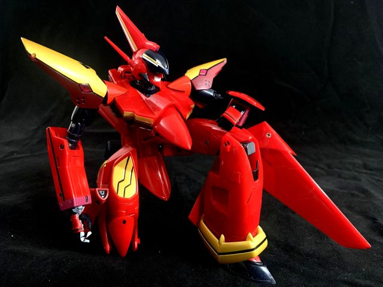
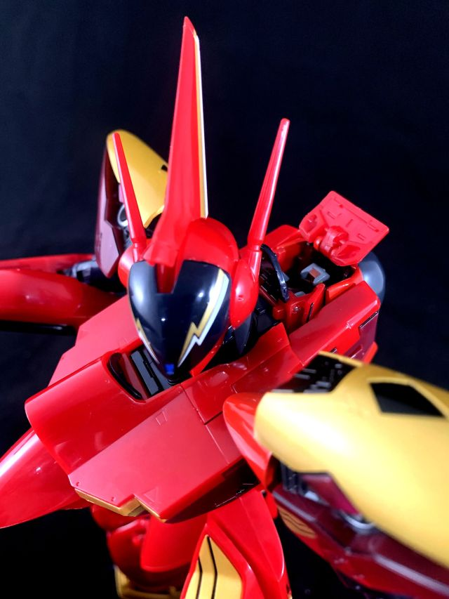

Nekki Basara's VF-19 Custom "Fire Valkyrie" with Sound Booster - Arcadia
Manufacturer
Releases
Scale
Releases
Scale
Arcadia
09/2014 - 34800 yen
08/2023 - 38280 yen
1/60
09/2014 - 34800 yen
08/2023 - 38280 yen
1/60
To Macross collectors of any brand or variety, Arcadia is synonymous with top shelf quality, perfect transformation, and a price tag that matches. This Fire Valkyrie is no different. There's more Fire Valkyrie toys and collectibles than any other machine from Macross 7, but none of the others quite approach this offering in size, quality, faithfulness to the source material, and/or how much one will set you back.

It comes in a hefty box with industry standard plastic trays securing the contents. Other manufacturers for these kinds of super deluxe collectors items might use styrofoam instead, as a callback to classic Chogokin releases, but not here.



Now really, the only downside to owning an Arcadia Fire Valkyrie is that it's expensive. The (at press time) recent reissue is a little more expensive in raw yen price, but with the exchange rate, is substantially cheaper than the original release. If you're really itching to own exactly one high quality Fire Valkyrie next time your tax return comes back, this is the one I'd recommend.